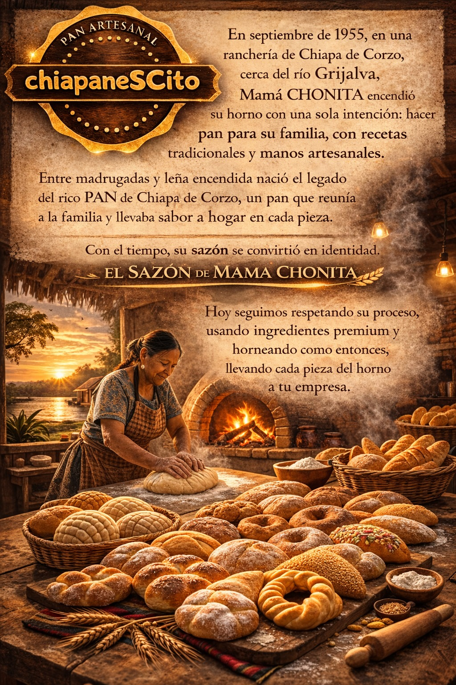

¿Quiénes Somos?
Conoce un poco más sobre chiapaneSCito

🍞 Nuestra esencia
En chiapaneSCito llevamos hasta tu negocio el sabor de un pan artesanal con tradición, calidad y ese toque que recuerda al sabor de hogar.
🏠 Nuestro sabor
Elaboramos pan inspirado en los sabores y tradiciones de Chiapa de Corzo, buscando que cada pieza conserve ese sabor especial que nuestros clientes disfrutan.
🤝 Para tu negocio
Nuestro objetivo es apoyar a tiendas, cafeterías, restaurantes, distribuidores y emprendedores con pan caliente y recién hecho para su venta.